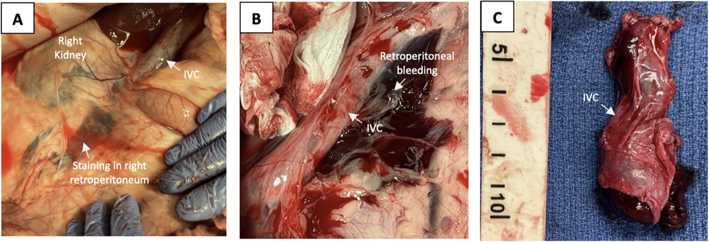

Página 2 · O mecanismo pró-trombótico
A paciente perfeita para trombosar
A internação hospitalar por qualquer motivo eleva o risco de tromboembolismo — a paciente nem precisa ter uma doença trombótica; basta estar acamada no hospital.
É o fator de risco mais esquecido — e um número que choca. Ele serve de porta de entrada para o mecanismo: por que a gestante já parte de um terreno pró-trombótico, com a tríade que explica tudo montada por design fisiológico.
A tríade de Virchow está completa na grávida
A gestante e a puérpera são "a paciente perfeita" para fazer um episódio de trombose — e a razão é que, nelas, a tríade de Virchow está inteira. Os três pilares que predispõem à trombose (estase venosa, lesão endotelial e hipercoagulabilidade) coexistem por design fisiológico da gravidez. Ela tem tudo. Não é um fator isolado que a torna vulnerável; é a soma dos três.
Estase venosa: compressão uterina + relaxamento hormonal do vaso
O sangue parado trombosa com mais facilidade — e na gestante o sangue fica parado por dois motivos somados. O útero gravídico comprime os grandes vasos venosos, dificultando o retorno. E a ação hormonal da gestação aumenta a complacência da vasculatura, relaxando a parede e reduzindo a velocidade do fluxo. Compressão mecânica mais relaxamento hormonal: a estase está montada.
Lesão endotelial: nidação, espiraladas, dequitação — e a doença de base
O endotélio, a superfície interna do vaso, sofre agressões em vários momentos do ciclo. Na nidação, na remodelação das artérias espiraladas durante a placentação, e por ocasião do parto, na dequitação (a saída da placenta, que deixa uma superfície cruenta no leito uterino). Cada um desses eventos expõe endotélio lesado, que é gatilho de coagulação. E há um agravante: se a paciente tem uma doença de base com disfunção endotelial prévia, o risco é ainda maior. Guarde essa ponte: é exatamente por aí que a pré-eclâmpsia entra como fator de risco.
Hipercoagulabilidade fisiológica: para não sangrar, sobem os fatores
A gestação é um preparo para o parto, e o parto é um evento hemorrágico. A resposta fisiológica é blindar a mulher contra o sangramento: os fatores com efeito pró-coagulante aumentam. É uma hipercoagulabilidade adaptativa, protetora contra a hemorragia do parto — mas que, como efeito colateral, joga a balança para o lado da trombose. Somando estase, lesão endotelial e hipercoagulabilidade, a gestante/puérpera reúne todas as condições para o evento.
Os fatores de risco clássicos
Sobre esse terreno se somam fatores individuais. TEV prévio (quem já trombosou tem chance maior de repetir). Trombofilia, hereditária ou adquirida. Cesariana / cirurgia pélvica, que aumentam bastante o risco. Obesidade (importante dentro e fora do ciclo gravídico-puerperal). E pré-eclâmpsia, pela disfunção endotelial — a ponte que se anunciou no tópico anterior.
O paradoxo: hemorragia é fator de risco de trombose
Este é contraintuitivo e por isso cai. A hemorragia — por exemplo, a hemorragia pós-parto — é fator de risco para trombose. Parece contradição: como um sangramento predispõe a um coágulo? Porque, para conter o sangramento, o sistema de coagulação sofre uma ativação maciça dos fatores. Essa ativação, uma vez disparada, predispõe ao evento trombótico. Por isso é preciso ficar de olho na paciente que fez hemorragia pós-parto: ela sai de um sangramento e entra no grupo de risco trombótico.

Sangue parado vira coágulo organizado: o segmento venoso mostra o trombo intraluminal, o produto final da estase somada à lesão endotelial e à hipercoagulabilidade. É o "porquê fisiopatológico" tornado peça.
Zaghloul MS. et al. Venous microtrauma… large animal acute deep venous thrombosis model, Front Cardiovasc Med, 2025 (painel C). Licença CC BY 4.0 · fonte
Nota de validade: modelo animal (suíno) de TVP aguda — ancoragem mecanística, não peça humana puerperal.Internação por qualquer motivo: 18 a 20 vezes
O fator mais esquecido, e o gancho da página. A internação hospitalar por qualquer motivo eleva o risco de tromboembolismo em 18 a 20 vezes. Não precisa ser uma internação por causa trombótica — basta estar internada. Pense na paciente admitida por ameaça de parto prematuro, ou na que rompeu bolsa pré-termo com vinte e poucas semanas e vai ficar internada até as 34 semanas: só o fato de estar acamada, imóvel, no hospital, já multiplica o risco. Considere isso ao ver essas pacientes na enfermaria — a profilaxia mecânica ou farmacológica pode estar indicada só pela internação.
Quiz — fixação
Uma puérpera de 32 anos teve hemorragia pós-parto volumosa, tratada com sucesso. Quanto ao risco trombótico:
- B — o paradoxo. Conter o sangramento exige uma ativação em massa da coagulação, e esse sistema hiperativado predispõe ao coágulo.
- A. Intuição errada de que sangrar "esvazia" os fatores — na prática o organismo os repõe e ativa em excesso, não os esgota.
- C. Trata a obesidade como condição necessária, mas a própria hemorragia já é fator independente; somar obesidade agrava, não é pré-requisito.
- D. Ignora que essa paciente carrega a tríade fisiológica da gestação mais o gatilho da hemorragia — está longe do risco basal populacional.
Sobre a estase venosa da tríade de Virchow na gestante, qual mecanismo está correto?
- B — os dois componentes. A estase é dupla: mecânica (útero comprimindo) e hormonal (aumento da complacência do vaso, que lentifica o fluxo).
- A. Pega só metade — a resposta parcial que parece certa; estase gravídica é sempre os dois componentes juntos.
- C. Também só metade, na direção oposta: ignora a compressão mecânica do útero.
- D. Inverte o efeito hormonal: o hormônio relaxa e lentifica, não vasoconstringe nem acelera.
Montado o motor, falta a cena: como essa trombose se manifesta — quase sempre na perna esquerda — e quando ela sobe para o pulmão.